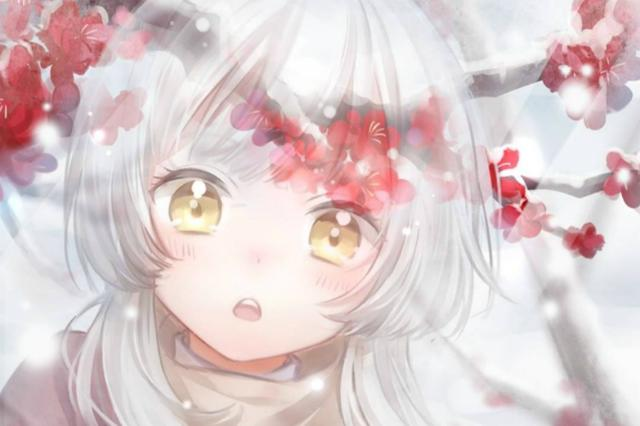

玩家：太美了!
随着“同心抗疫”的呼声高涨，人们也渐渐将减少出行、多大口罩，安排进入了日常的生活中，在我们身边那些大大咧咧的小年轻、懵圈的中老年人们，也将口罩牢牢地挂在了脸上，支持抗疫从自身做起，已经不再一句口号，甚至就连游戏里的角色也纷纷戴上了口罩，真是将防疫工作安排得彻彻底底。这不，在闪耀暖暖官方2月19日的预告中提到，为了呼吁玩家们同心抗疫，游戏主角暖暖也将戴上口罩了，到底是怎么回事呢，我们一起来看看吧。
原来在“战疫”未停的当下，游戏闪耀暖暖为了呼吁大家同心抗疫，特意在游戏中制作了口罩道具，而玩家们在2月20日的游戏更新后，就可以上线直接领取“医用外科口罩”这款游戏道具，以及上衣部件“向光而行”，还游戏内的幻之券道具，这慷慨的大手笔，也让闪耀暖暖的玩家们直呼过瘾。
虽然闪耀暖暖官方给玩家们送出的“医用外科口罩”，仅仅只是游戏内的道具，但是却非常逼真地还原了口罩朴素的样子，闪耀暖暖作为一款换装搭配游戏，这样朴实无华的套装部件，在以往的游戏中几乎是很难出现的，由此也能够看出闪耀暖暖对于“抗疫”工作的大力支持。并且除了口罩，还专门作出了呼吁玩家戴口罩、勤洗手的抗疫题材上衣，真的是诚意满满，虽然和口罩一样，这款上衣部件也非常的朴素，但是闪耀暖暖官方能够花费精力、物力、人力，去设计这样颜值并不高的套装、建模，也能够感受到闪耀暖暖对于抗疫工作的支持。

闪耀暖暖虽然只是一款普通的手游，但是能够以小见大在游戏里呼吁大家带好口罩、做好防疫工作，并且也曾给武汉剧增了一百万元，虽然这次送给玩家们的口罩、上衣部件颜值比较普通，但是这样爱护自己、戴上了口罩的暖暖，也值得玩家们称赞一声真美。所以笔者也由衷的希望各位小伙伴，在日常出现中能带好口罩、保护好自己。